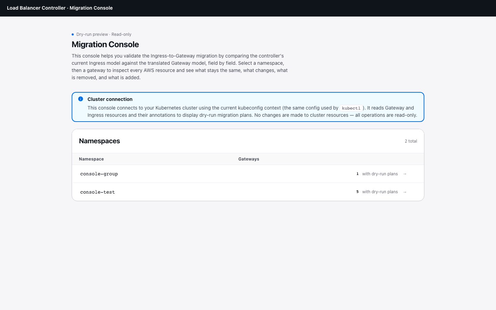
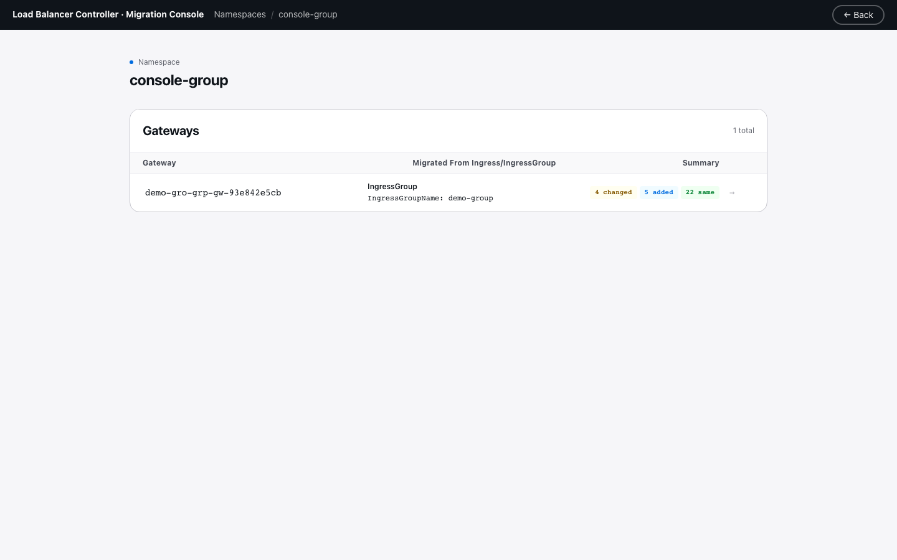
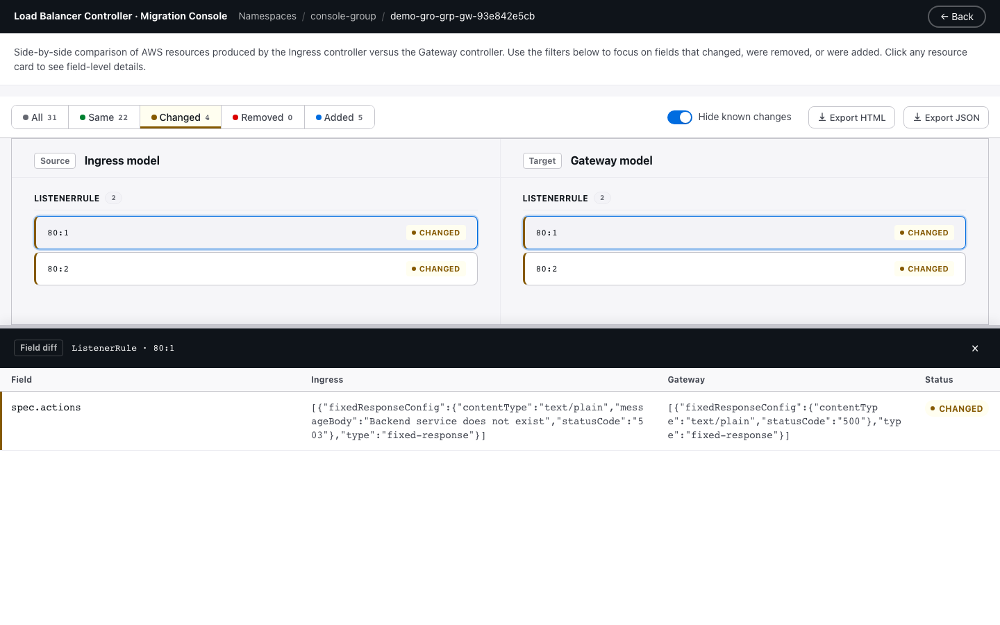
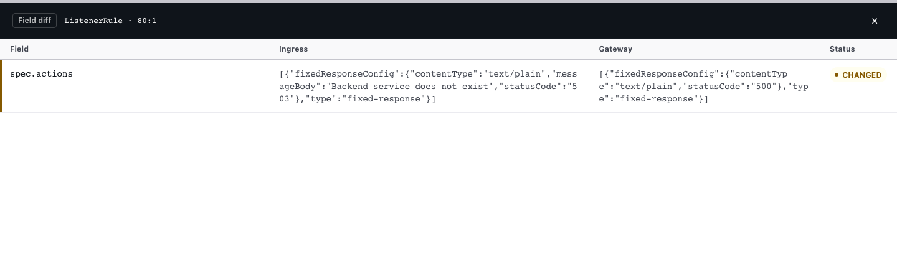

In-Cluster Migration Console¶
The migration console is a local web UI bundled into the lbc-migrate binary.
It compares the ingress controller's dry-run plan against the gateway controller's
dry-run plan side by side, field by field, so you can confirm the generated
Gateway manifests will create the same AWS resources as the current Ingress before
switching traffic.
A dry-run plan is a JSON snapshot of the AWS resource stack a controller
would build (LoadBalancer, Listeners, ListenerRules, TargetGroups,
TargetGroupBindings, SecurityGroups). The plan is written back to the source
Kubernetes resource as an annotation — alb.ingress.kubernetes.io/dry-run-plan
on the Ingress (when the IngressPlanAnnotation feature gate is on) and
gateway.k8s.aws/dry-run-plan on the Gateway (when it carries the
gateway.k8s.aws/dry-run: "true" annotation). The console reads both plans
and diffs them — no AWS resources are created.
The console is read-only. It connects to your Kubernetes cluster using the
current kubeconfig context (the same config used by kubectl). It reads Gateway
and Ingress resources and their annotations. It never creates, updates, or
deletes cluster or AWS resources.
What it supports¶
- Cluster-wide discovery of namespaces that hold dry-run Gateways,
each paired with its source Ingress via the
gateway.k8s.aws/migrated-fromtag. - Side-by-side comparison of the full built model stack — LoadBalancer, Listeners, ListenerRules, TargetGroups, TargetGroupBindings, SecurityGroups — produced by each controller.
- Side-by-side comparison with field-level diff and status filtering.
- Field-level diff with four statuses:
same,changed,added,removed. Slice fields (e.g. SecurityGroup ingress rules) are compared as multisets. - Known-change filtering that hides expected migration artifacts so real
drift between the two plans stands out. A known change is a diff the
console can attribute to a known structural difference between the two
controllers — for example, the
migrated-fromtag the migration tool stamps on every generated resource, controller-generated resource names, health-check default drift, andtargetGroupARN.$refpointer churn. See How diffs are classified for the full list. - Resource correlation across controllers:
TargetGroupandTargetGroupBindingare keyed byserviceRef.name:portso the same backing service shows as one correlated row instead of a removed+added pair, even though the two controllers generate different raw stack IDs. - IngressGroup resolution including cross-namespace groups, using the
migrated-fromtag plus a cluster-wide list of Ingresses to locate the single group member that carries the plan annotation. - Export — download a self-contained HTML report or raw JSON to share the diff with team members who do not have cluster access.
What it does not do:
- It does not call AWS or check live resource state. It only diffs the two dry-run plans.
- It does not have a namespace-scoped mode. Cross-namespace ingress groups require cluster-wide list permission on Ingresses and Gateways.
- It does not modify any Kubernetes or AWS resource.
The controllers do write annotations
The console itself is read-only, but the controllers it reads from are
not. While the IngressPlanAnnotation feature gate is enabled, the
ingress controller writes an
alb.ingress.kubernetes.io/dry-run-plan annotation on Ingress;
the gateway controller writes a gateway.k8s.aws/dry-run-plan
annotation on each Gateway that carries gateway.k8s.aws/dry-run: "true".
These annotations are the data the console reads. Disable the feature
gate and remove the dry-run Gateways once migration is complete to stop
further annotation writes.
How to launch¶
The console is part of the dry-run verification workflow (Step 2 of the Migration Guide). In summary:
- Enable
IngressPlanAnnotation=truefeature gate on the controller - Generate Gateway resource manifests with
lbc-migrate(dry-run is on by default) - Apply the manifests — both controllers write their plans as annotations
- Launch the console to compare them
lbc-migrate --console
# or bind to a different port
lbc-migrate --console --port 9000
The console binds to http://localhost:8080 by default and operates cluster-wide
using your current kubeconfig context. Open that URL in a browser.
See the Migration Guide for the full step-by-step instructions including prerequisites and feature gate setup.
Using the console¶
Landing page¶
The landing page lists every namespace that has at least one Gateway carrying
a gateway.k8s.aws/dry-run-plan annotation, with a count of those Gateways.
Namespaces without dry-run plans do not appear.
An info alert at the top reminds you that the console reads from the cluster using your current kubeconfig context and that all operations are read-only.

Click a namespace to see its gateways.
Gateway list¶
After selecting a namespace, the console lists all Gateways with dry-run plans in that namespace. Each gateway row shows a summary of its diff status (how many fields are same, changed, removed, or added) and maps to its source Ingress or IngressGroup.

Click a gateway to enter the comparison view.
Comparison view¶
The comparison view shows a side-by-side diff for the selected gateway. It is organized into these regions:

- Segmented filter control — buttons for
All,Same,Changed,Removed,Addedwith counts. Click a button to scope the view to only resources in that status. Clicking an active filter resets back to All. Hover over any filter for a description of what it shows. - Hide known changes toggle — filters out diffs classified as known migration artifacts (see How diffs are classified below). On by default.
- Export buttons — download the diff as a self-contained HTML report or raw JSON. A confirmation dialog warns that the exported file can be viewed without cluster access.
- Ingress model (left) and Gateway model (right) — each resource in the stack appears as a card. When a status filter is active, each card shows a status tag next to the resource ID for accessibility.
Click a card to open the detail drawer. The drawer lists every field with its ingress-side value, gateway-side value, and status. It carries its own "Hide known changes" checkbox for per-resource filtering. When a known cause is identified, it appears in the "Known Cause" column.

Breadcrumb navigation¶
The top bar shows breadcrumbs for your current location:
Namespaces / <namespace> / <gateway>. Click any breadcrumb to navigate back
to that level. The "← Back" button goes up one level.
How resources are correlated¶
Resources are matched across the two plans by a correlation key:
- For most resource types the raw stack ID is stable, so the key is the ID itself.
- For
TargetGroupandTargetGroupBindingthe two controllers generate different raw IDs even when pointing at the same backing service. The console keys these on the TGB'sserviceRef.name:port, producing a single correlated row with field-level diffs instead of a removed+added pair.
How diffs are classified¶
Every field diff is assigned one of four statuses:
- same — both sides produce the same value. Slice fields are compared as
multisets (
[80, 81]equals[81, 80]) because ALB treats things like SecurityGroup ingress rules as unordered. - changed — both sides have the field, values differ.
- added — only the gateway side has the field.
- removed — only the ingress side has the field.
The Hide known changes toggle filters out the following known-artifact cases:
migrated-fromtag added to any resource — the migration tool stampsspec.tags.gateway.k8s.aws/migrated-fromon every generated resource, so anaddedentry for this tag is expected on the gateway side.- Controller-generated name change on ALB-family resources —
spec.nameonLoadBalancerandTargetGroup,spec.groupNameonSecurityGroup, andspec.template.metadata.nameonTargetGroupBinding. Marked expected only when both sides match the controller-generated format (k8s-<...>-<10 hex>, two or three dash sections before the suffix). A custom name set via annotation on either side still surfaces as a real changed diff. - Health-check default drift on TargetGroup —
spec.healthCheckConfig.healthyThresholdCount,spec.healthCheckConfig.unhealthyThresholdCount, andspec.healthCheckConfig.matcher.httpCode. The ingress controller defaults to 2 / 2 / 200; the gateway controller defaults to 3 / 3 / 200–399. To preserve the Ingress-side health-check behavior on the gateway side (e.g., for services with tight health-check requirements), set explicit values inTargetGroupConfiguration.spec.healthCheck.*on the generatedTargetGroupConfiguration. See TargetGroupConfiguration for the full field reference. spec.actionsarray change on ListenerRule — when the entirespec.actionsfield differs only because of differenttargetGroupARN.$refstrings (naming artifact) and an addedweightfield (gateway controller always emitsweight: 1on every forward target group; the ingress controller omits it), the diff is classified as known. If any other part of the actions structure differs (action type, status code, etc.), it surfaces as a real change.targetGroupARN.$refstring change — on ListenerRule (forwardConfig.targetGroups[...].targetGroupARN.$ref) and on TargetGroupBinding (spec.template.spec.targetGroupARN.$ref). These$refvalues are JSON pointers into another resource's raw stack ID; the stack IDs differ per controller even when they point at the same backing service, so the string always differs. Real target-group differences surface on the correlatedTargetGrouprow.
Everything not matching these rules is shown as-is, so genuine drifts between actual and expected changes are never silently hidden.
Exporting results¶
Click Export HTML or Export JSON in the toolbar to share the diff:
- HTML — a self-contained report with embedded styles and a full table of all diff entries. Open in any browser with no dependencies.
- JSON — the raw diff payload including namespace, gateway, timestamp, and all entries. Useful for storing in a ticket or processing programmatically.
Both exports trigger a confirmation dialog warning that the file contains full resource configurations viewable without cluster access.
Resolving the ingress source for a Gateway¶
Each Gateway is paired with the Ingress that holds its dry-run plan. The
console derives the pairing from the gateway.k8s.aws/migrated-from tag on
the LoadBalancer resource of every generated plan:
ingress/<namespace>/<name>— standalone Ingress, direct pointer.ingress-group/<group-name>— the console lists Ingresses cluster-wide, filters byalb.ingress.kubernetes.io/group.name == <group-name>, and returns whichever member currently carries a non-emptydry-run-planannotation.
On a healthy group, exactly one member holds the plan. If the console finds zero or more than one, it surfaces an error on the Gateway card.
RBAC¶
The console needs these permissions in the context it runs under:
- Cluster-wide
listongateways.gateway.networking.k8s.io— for the landing page and per-namespace gateway lists. - Cluster-wide
listoningresses.networking.k8s.io— for resolving group plan holders, since ingress groups can span namespaces. getoningresses.networking.k8s.ioin any namespace that appears on the landing page — to read the plan annotation once the holder is resolved.
Troubleshooting¶
"could not determine ingress plan holder: no migrated-from tag found on
LoadBalancer in gateway model" — the Gateway's dry-run plan lacks a
migrated-from tag, which means it was not generated by lbc-migrate.
Confirm you applied the output of lbc-migrate and not a hand-authored
Gateway.
"no ingress in group <name> carries a dry-run-plan annotation" — the
ingress controller has not yet written the plan annotation for any member of
that group. Confirm the IngressPlanAnnotation feature gate is enabled and
the ingress controller has reconciled the group at least once.
"multiple ingresses in group <name> carry a dry-run-plan annotation" —
usually a stale annotation left behind after group membership changed.
Manually clear the annotation from all but one member and refresh the console.
Limitations¶
- The console does not verify AWS resource state. It only compares the two dry-run plans.
- Cross-namespace explicit groups require cluster-wide list permission on Ingresses (see RBAC). There is no namespace-scoped mode.